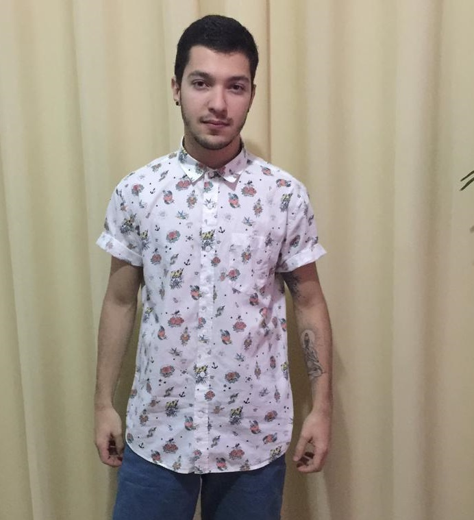

- Home
- >
- Currículo
Currículo
Dados Pessoais

Nome:
Bruno Stelmastchuk Roque
Data de Nascimento:
17 de junho de 1995
Residência:
Maringá, Paraná
Idiomas:
Português (Nativo)
Inglês (avançado)
Sobre Mim
Meu nome é Bruno Stelmastchuk Roque, me formei em 2018 em biomedicina pela Universidade Estadual de Maringá (UEM). Fiz residência multiprofissional em biomedicina na área da saúde do adulto. No momento curso Análise e Desenvolvimento de Sistemas com foco em desenvolvimento Web .Estou à disposição para entrar em um programa de trainee, aprendendo todo o conteúdo necessário para ingressar na área de TI . Com as experiências profissionais que possuo, pude obter soft-skills como trabalhar em equipe, comunicação e problem solving.
Atualmente meu aprendizado está voltado para as ferramentas front-end - porém estou aberto a novas oportunidades e abordagens que não necessariamente envolvam o front-end. Desenvolvi diversos projetos utilizando JavaScript, HTML5, CSS3(com CSS grid, flexbox, bootstrap). Além disso estou constantemente aumentando minha bagagem de conhecimento através cursos e projetos. No momento estou explorando tecnologias como React, React Native e Angular.
Educação
2021-Em andamento
Análise e desenvolvimento de sistemas - Faculdade Anhanguera
2018-2020
Residência Multiprofissional em saúde do adulto - Universidade Federal do Triângulo Mineiro
2014-2018
Bacharelado em biomedicina - Universidade Estadual de Maringá
Habilidades
Soft-skills
Comunicação, Trabalho em equipe, Resolutividade, Persistência.
CSS
Flexbox, CSS grid, Bootstrap 4/5
HTML5
Aplicação de tags alinhadas a SEO
JavaScript
jQuery, ESNext, React JS
Experiência de Trabalho
2020-2021
Biomédico - Servidor público - Prefeitura Municipal de Peruíbe
Contato
brunostel@gmail.com
(43) 99606-9120
← Voltar ao início